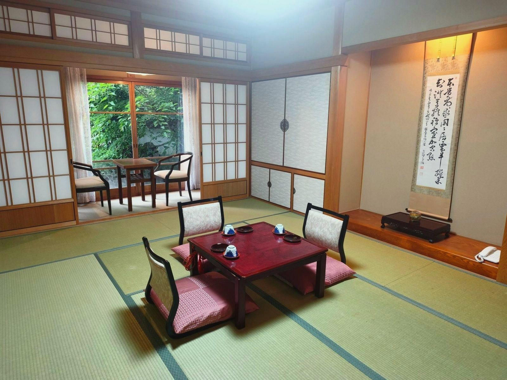
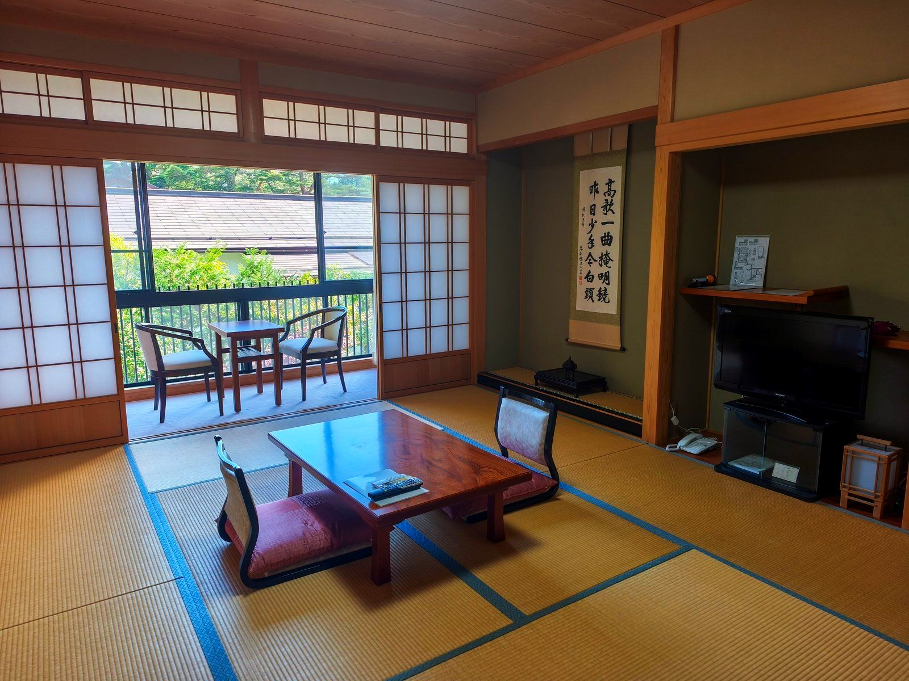
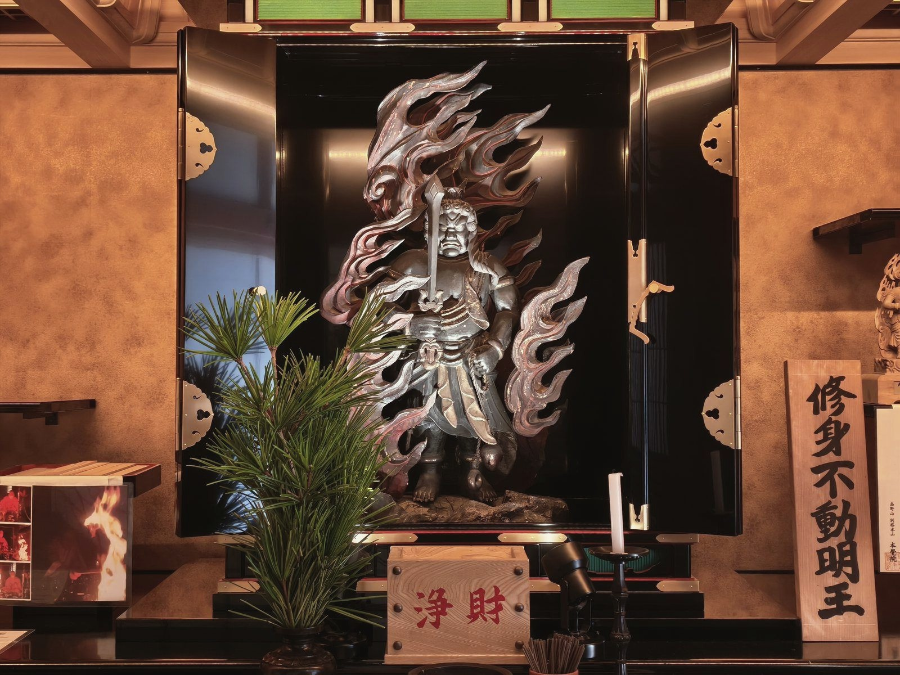

高野山 別格本山本覚院


A great hall with screen paintings by Edo-period Kanō-school artists. In the play of light and shadow at dusk, time seems to slow. Also used for the reception after a Buddhist wedding ceremony.

Shōjin ryōri, the Buddhist vegetarian cuisine handed down by Kōbō Daishi (Kūkai). Seasonal, local ingredients, carefully prepared according to tradition, served in a setting found only at Kōyasan.

Spacious large and medium baths for unwinding. Body soap, shampoo, conditioner, hair dryer, bath and face towels, and a toothbrush set are all provided.
Open 5:00 pm – 9:00 pm


Tenpōrin, our finest special room overlooking the Shigemori Mirei garden; Hōkaigū, a Japanese-modern suite where tradition meets the contemporary; and Kūtenbō, a private guest house with its own tea room. All three face the garden on the ground floor, for a quiet stay.
Tenpōrin and Hōkaigū include a private bathroom
View Availability & Rates →
Japanese-style rooms in the main building, each with its own bath and toilet, overlooking a garden by Shigemori Mirei. Wakasugi is on the ground floor for easy access; Karin is on the second floor.
8-mat main room plus 3-mat room · sleeps up to 3 · large bath also available
View Availability & Rates →
Japanese-style rooms in the new wing, with views of the garden through every season. Ten rooms in all, across the first and second floors. Rooms do not have a private bath or toilet; the large bath is available to all guests.
10-mat room · sleeps up to 4
View Availability & Rates →

Quiet, traditional tatami rooms, unchanged over the years. Rooms on the second floor look out over the garden. Adjoining rooms are also available for larger groups.
TV and air conditioning · adjoining rooms available
A solemn morning service in the main hall. The resonance of shōmyō chant clears the mind and sets the tone for the day.
Copy the words of the Buddha, character by character, with a wish in your heart. For beginners, we offer a tracing version of the Heart Sutra. Paper, brush, brush pen, ink stick and inkstone are all provided — just ask.
Five gardens, including a rock garden by Shigemori Mirei. Enjoy their seasonal beauty and quiet.
Shōjin ryōri as handed down by Kōbō Daishi, in its original form. Seasonal ingredients and traditional technique, in every bowl.
Visit Okunoin, the sacred inner sanctuary of Kōyasan, and pay respects at the mausoleum of Kōbō Daishi — a thousand years of history.
The ceiling of the main hall still bears vivid, multicolored work by an Edo-period painter from 250 years ago, and the great hall holds rare screen paintings by artists of the Kanō school.
Five gardens, including a rock garden by the celebrated Shōwa-era landscape designer Shigemori Mirei. Enjoy a world of moss and stone that changes its expression with the seasons.
Every morning, the vice head priest and monks hold a service in the main hall. Anyone may join and spend a quiet moment surrounded by the sutra chanting handed down on Mount Kōya.





Hongakuin is a sub-temple of Kongōbuji, the head temple of Kōyasan Shingon Buddhism, holding the rank of special head temple (bekkaku honzan). Its principal image is a statue of Fudō Myōō (Acala) carved by the priest Chishō Daishi, and its history reaches back to its founding in the Kenkyū era (1190).
Hongakuin stands on ground said to be where Kōbō Daishi, praying here long ago, sensed the presence of the Six Jizō Bodhisattvas. During the Kenkyū era of the Heian period, the priest Gyōkū climbed Kōyasan at a poet's request and chanted sutras here without pause. Amid a burst of light, Jizō Bodhisattva appeared and told him,
"Dwell here." The priest built a hermitage on this spot, and that hermitage became the beginning of Hongakuin. In 1980, His Holiness the 14th Dalai Lama also stayed at Hongakuin.
Every morning we hold a prayer service with a dharma talk by the head priest, which guests are welcome to attend freely.

I hope this message finds you in good health.
More than half a century has passed since I began serving the Buddha and Kōbō Daishi.
Head Priest, Koyasan Hongakuin (Bekkaku Honzan)
Head Priest Inaba Hōken is also a master of shōmyō, the Buddhist chant of Kōyasan’s Nanzanshin school, recorded here for Victor Entertainment.
Listen on Spotify
Listen on Apple Music
Vice head priest Koga Hōken welcomes guests to the morning service, which anyone may attend.
A Buddhist nun also serves at Hongakuin alongside the vice head priest. Women travelers, including those traveling alone, are warmly welcome.
Memorial services (ekō) and prayers, including perpetual memorial for those without an heir to tend a grave, can be arranged at Hongakuin. Please contact us by phone to discuss your request.
| Temple | Koyasan Hongakuin (Bekkaku Honzan) |
| Sect | Koyasan Shingon Buddhism |
| Address | 618 Koyasan, Koya-cho, Ito-gun, Wakayama 648-0211, Japan |
| Phone | +81-736-56-2711 |
| Check-in | From 3:00 pm |
| Check-out | By 10:00 am |
By train: Take the Nankai Kōya Line to Gokurakubashi Station, then transfer to the cable car to Kōyasan Station.
By bus: Take the Nankai Rinkan bus bound for Okunoin or Daimon and get off at the Keisatsusho-mae stop (about 10 minutes).
On foot: About 2–3 minutes from the bus stop. Follow the tree-lined approach and the temple gate comes into view.
Solo travelers are welcome. However, if no other guests are staying on a given night, we may be unable to accept a single guest. Please check availability by phone.
Stays can be booked online at any time via the “Book your stay” button on this page. You can also reserve by phone (+81-736-56-2711, 9:00 am – 5:00 pm JST).
Check-in is from 3:00 pm, and check-out is by 10:00 am.
Yes, the gate closes at 10:00 pm. The mountain grows quiet in the evening, so please return by then.
We serve shōjin ryōri, including dishes such as kōya-dōfu (freeze-dried tofu) and goma-dōfu (sesame tofu). Please note that we are unable to accommodate individual food allergies.
All guests are welcome to join. Attendance is optional, not required. It lasts roughly 45 minutes to an hour.
Yes, guests from overseas are warmly welcome. Our staff can assist you in simple English.
Book your stay online, or call us directly for prayer requests and memorial services.
Book Your Stay +81-736-56-2711Office hours 9:00 am – 5:00 pm